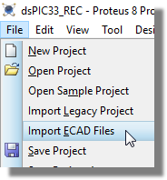
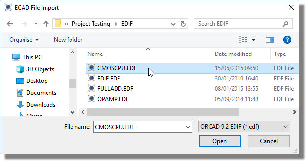
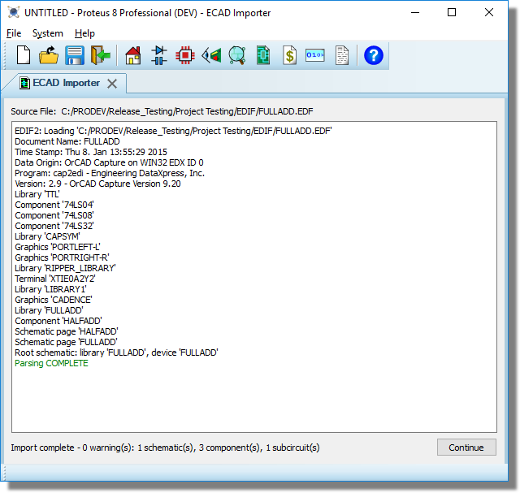
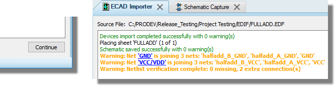
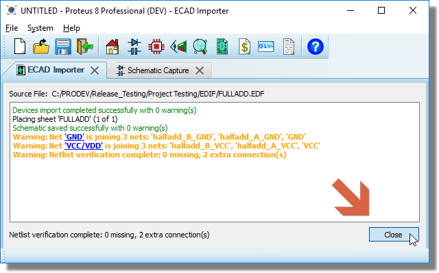

Proteus supports the import of EDIF2 files as exported from the OrCAD v9.2 or the OrCAD 17.2 schematic capture product. There are three phases to the import:
Stage 3 is of particular importance. After we import the data we generate a netlist in Proteus from the imported schematic. We then compare this netlist against the one stored inside the EDIF file which tells us if the connectivity has been preserved during import. Any connectivity errors or differences are displayed in a log and the user needs to make suitable changes in Proteus manually to fix any connectivity errors.
The end result of this process is a schematic whose connectivity / netlist matches the EDIF file, providing a high degree of confidence in the integrity of the import.
Go to File menu / Import ECAD files. This will start a new project.

Choose a file to import. Currently only OrCAD EDF/EDIF files are supported.

The file will be parsed but not saved. Any parsing errors will be displayed in the log.

Click continue. The data will be imported and the schematic will be created. The imported netlist and the Proteus netlist will be compared for consistency. Any errors or warnings will be displayed in the log.

Very often you will see power net differences / errors after import because power nets are handled differently in OrCAD. This is discussed in more detail below.
Amend the schematic to correct errors as necessary. Each edit will re-run the netlist comparison and update the log.
Click the close button or close the importer tab to complete the process.
